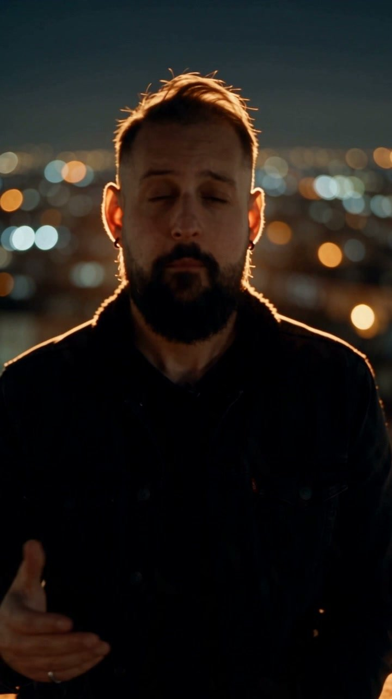

Vídeo y anuncios · 30 min
Cuándo va cada registro, y el truco que funcionó: personaje, movimiento y audio por separado para que la cara aguante.

| UGC de móvil | Cinematográfico | |
|---|---|---|
| Para qué | Vender un producto concreto en redes | Marca, cierres, avatares, presentaciones |
| Luz y lugar | Día, calle o tienda real | Noche, contraluz, ciudad desenfocada |
| Cámara | Fija a la altura de los ojos | Avance lento, planos con intención |
| Riesgo | Bajo: la imperfección pasa por estilo | Medio: cada error se nota; la cara se oscurece con contraluz puro |
| Lo que vende | Producto en mano en 3 s, pega real, precio y condición | La imagen. Poco texto o ninguno |
Regla de los casos con cifras: elige un registro que favorezca al modelo. Lo que peor funciona es la nostalgia emocional con pretensión de realismo.
Probado en la charla con un clip de avatar de 10 segundos. El error habitual es pasar el vídeo entero como "estilo": el modelo pierde la cara. Lo que funciona es separar las tres cosas:
character. La cara sale la tuya.video. El gesto y el ritmo se reproducen.audio. Los labios van sincronizados.Prompt de ejemplo (Seedance 2.5, 10 s, vertical, cámara pushIn):
Plano cinematográfico vertical. El hombre de las referencias de personaje (mismo rostro exacto: barba recortada, cabeza rapada a los lados), con chaqueta oscura, habla a cámara en una azotea de ciudad de noche, luces desenfocadas al fondo y un contraluz naranja de cine. Reproduce exactamente los gestos del vídeo de referencia y sincroniza los labios con el audio de referencia en castellano. Avance lento de cámara. Sin texto en pantalla, sin subtítulos, sin música.
El modelo no conserva tu voz: usa el audio para el ritmo y los labios, pero sintetiza otra. El vídeo se genera sobre tu pista, así que los labios ya van con ella: quita el audio del resultado y pon el original encima. Con ffmpeg:
ffmpeg -i resultado.mp4 -i tu_voz.wav -map 0:v:0 -map 1:a:0 -c:v copy -af "loudnorm=I=-14:TP=-1" -c:a aac -shortest final.mp4
En la primera prueba el contraluz dejó la cara demasiado oscura para un proyector. Añade al prompt "luz de relleno suave en la cara" o "neón lateral".
Clon de voz profesional y avatar.
Semana de la IA 2026 · Cluster TIC Asturias · 25 de septiembre · Adrián Nicieza, edrian.exe · contacto@edrianexe.com · @edrian.exe
Contenido generado con ayuda de IA y revisado por un humano. Datos de la tienda de ejemplo, simulados.